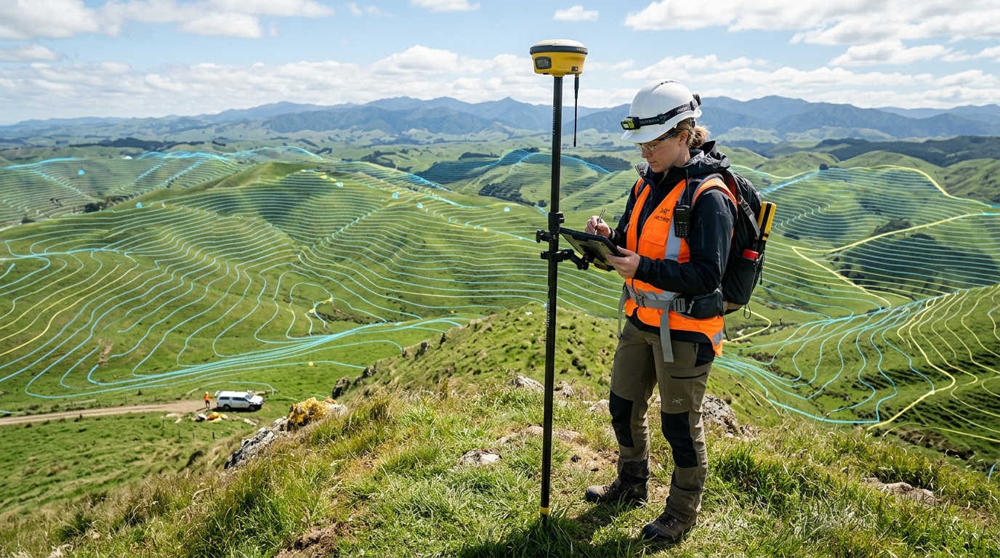

While boundary surveys define the legal perimeter of a property on a horizontal plane, real parcels are rarely flat. Terrain elevation, natural drainage corridors, rock outcroppings, trees, and existing structures shape how land can be developed. A topographic survey captures these vertical dimensions, creating an accurate three-dimensional digital elevation model (DEM) essential for architects, civil engineers, and landscape designers.
A comprehensive topographic map reveals the physical surface of the earth in meticulous detail:
One of the most frequent construction mistakes is building without understanding natural runoff paths. Topographic surveys allow civil engineers to accurately design stormwater retention ponds, foundation finish floor elevations, and grading plans that protect homes from water damage and comply with local environmental regulations.
At GeoSurvey Pro, our surveyors blend robotic total stations and dual-frequency RTK GNSS receivers with georeferenced GIS spatial databases. This produces layered CAD files (DWG/DXF) ready for direct import into civil design workflows, saving architects weeks of manual site modeling.
Planning a building addition, site grading, or land development? Explore our Topographic Mapping services or reach out to our team to discuss your project.